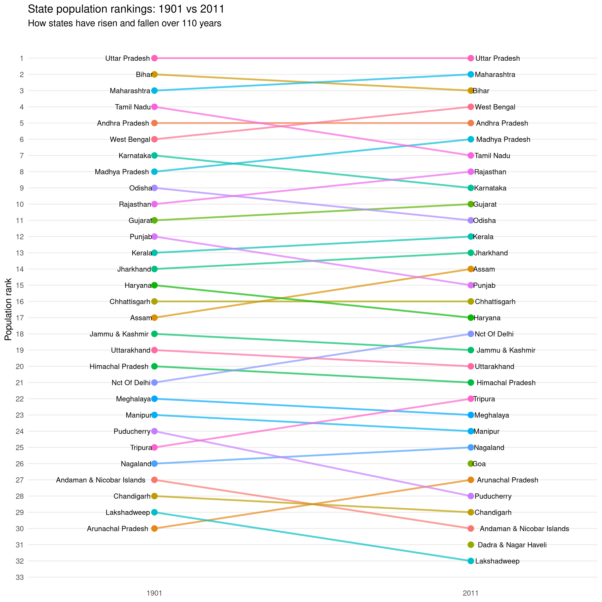
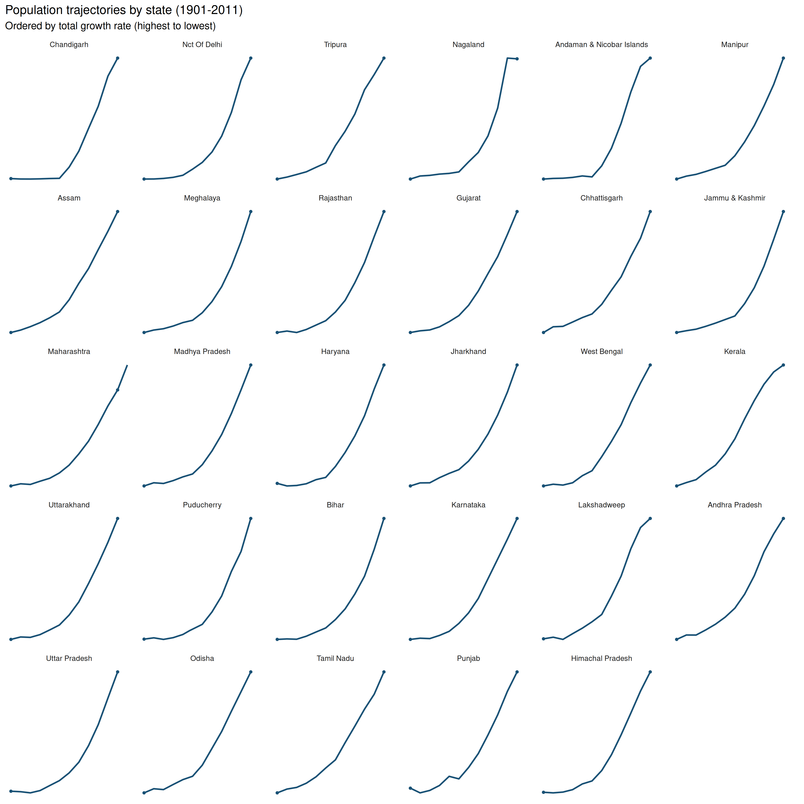
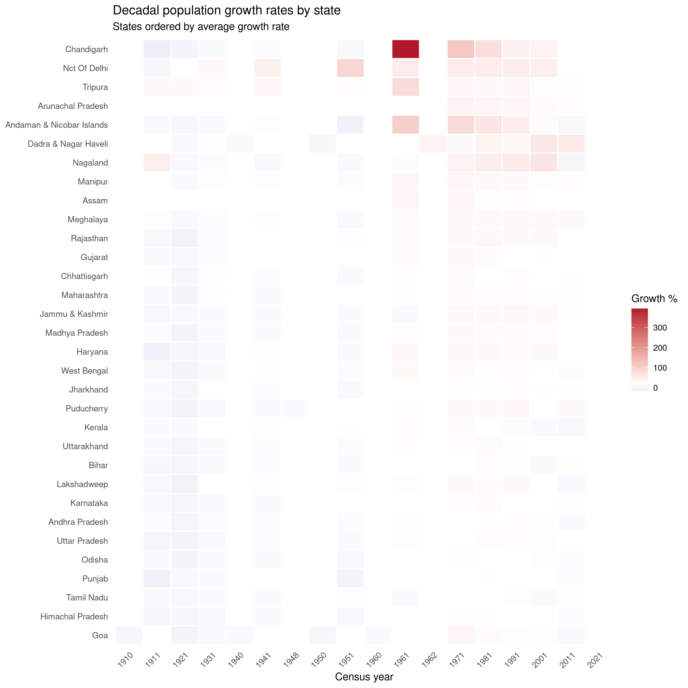

State ranking changes (1901-2011)
How have state populations shifted over 110 years?
rankings <- census_population_time_series |>
filter(geography == "state", year %in% c(1901, 2011)) |>
group_by(year) |>
mutate(rank = rank(-population, ties.method = "first")) |>
ungroup() |>
select(year, state_name_harmonized, population, rank)
rank_change <- rankings |>
pivot_wider(names_from = year, values_from = c(population, rank)) |>
mutate(
rank_change = rank_1901 - rank_2011,
direction = case_when(
rank_change > 0 ~ "Gained",
rank_change < 0 ~ "Lost",
TRUE ~ "Same"
)
)
ggplot(rankings, aes(x = factor(year), y = rank, group = state_name_harmonized)) +
geom_line(aes(color = state_name_harmonized), linewidth = 1, alpha = 0.7) +
geom_point(aes(color = state_name_harmonized), size = 3) +
geom_text(
data = filter(rankings, year == 1901),
aes(label = state_name_harmonized),
hjust = 1.1, size = 3
) +
geom_text(
data = filter(rankings, year == 2011),
aes(label = state_name_harmonized),
hjust = -0.1, size = 3
) +
scale_y_reverse(breaks = 1:35) +
scale_x_discrete(expand = expansion(mult = c(0.4, 0.4))) +
labs(
x = NULL,
y = "Population rank",
title = "State population rankings: 1901 vs 2011",
subtitle = "How states have risen and fallen over 110 years"
) +
theme_minimal() +
theme(
legend.position = "none",
panel.grid.major.x = element_blank(),
panel.grid.minor = element_blank()
)
State population trajectories
state_trajectories <- census_population_time_series |>
filter(geography == "state") |>
group_by(state_name_harmonized) |>
mutate(
pop_scaled = (population - min(population, na.rm = TRUE)) /
(max(population, na.rm = TRUE) - min(population, na.rm = TRUE))
) |>
ungroup()
growth_order <- state_trajectories |>
filter(year %in% c(1901, 2011)) |>
group_by(state_name_harmonized) |>
filter(n() == 2) |>
summarise(
growth = (population[year == 2011] / population[year == 1901]) - 1,
.groups = "drop"
) |>
filter(!is.na(growth)) |>
arrange(desc(growth))
state_trajectories <- state_trajectories |>
filter(state_name_harmonized %in% growth_order$state_name_harmonized) |>
mutate(state_name_harmonized = factor(
state_name_harmonized,
levels = growth_order$state_name_harmonized
))
ggplot(state_trajectories, aes(year, pop_scaled)) +
geom_line(color = "#1a5276", linewidth = 0.8) +
geom_point(
data = filter(state_trajectories, year %in% c(1901, 2011)),
color = "#1a5276", size = 1
) +
facet_wrap(~state_name_harmonized, ncol = 6) +
labs(
x = NULL, y = NULL,
title = "Population trajectories by state (1901-2011)",
subtitle = "Ordered by total growth rate (highest to lowest)"
) +
theme_minimal() +
theme(
axis.text = element_blank(),
panel.grid = element_blank(),
strip.text = element_text(size = 8)
)
Decadal growth rates
growth_data <- census_population_time_series |>
filter(geography == "state", !is.na(variation_percent)) |>
select(year, state_name_harmonized, variation_percent)
# Order states by average growth
state_order <- growth_data |>
group_by(state_name_harmonized) |>
summarise(avg_growth = mean(variation_percent, na.rm = TRUE)) |>
arrange(avg_growth) |>
pull(state_name_harmonized)
growth_data <- growth_data |>
mutate(state_name_harmonized = factor(state_name_harmonized, levels = state_order))
ggplot(growth_data, aes(factor(year), state_name_harmonized, fill = variation_percent)) +
geom_tile(color = "white", linewidth = 0.5) +
scale_fill_gradient2(
low = "#2166ac", mid = "white", high = "#b2182b",
midpoint = 20, na.value = "grey90",
name = "Growth %"
) +
labs(
x = "Census year",
y = NULL,
title = "Decadal population growth rates by state",
subtitle = "States ordered by average growth rate"
) +
theme_minimal() +
theme(
axis.text.x = element_text(angle = 45, hjust = 1),
panel.grid = element_blank()
)